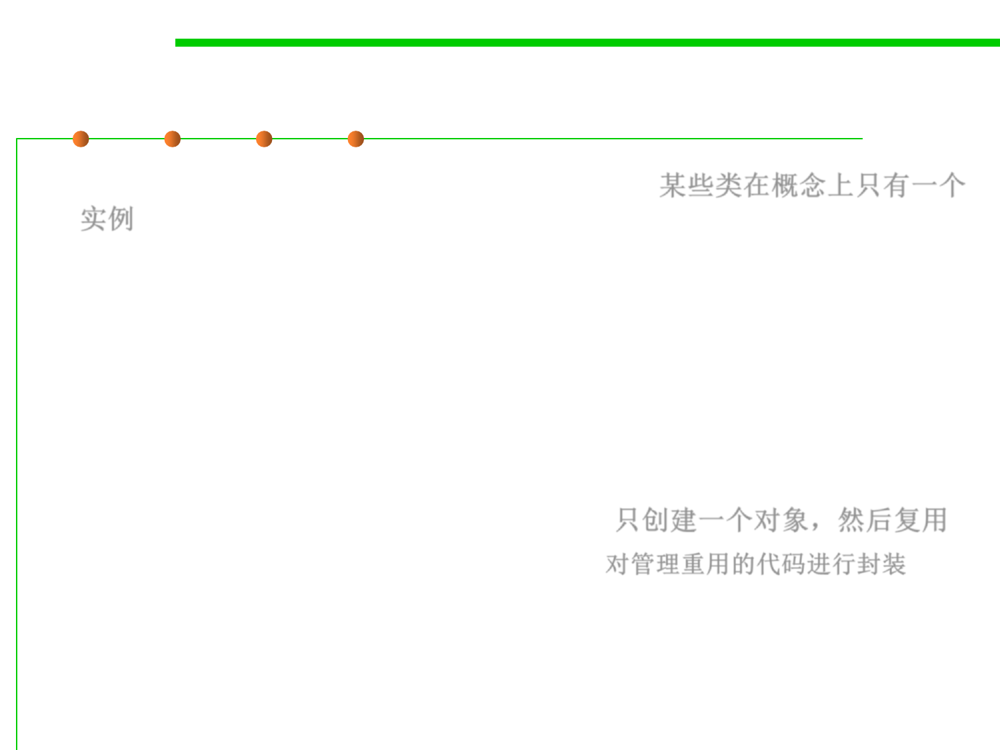

Singleton objects
8.3 Code Tuning for Performance Optimization
▪ Some classes have conceptually one instance 某些类在概念上只有一个
实例
– Many printers, but only one print spooler
– One file system
– One window manager
– An accounting system will be dedicated to serving one company.
▪ Naïve: create many objects that represent the same conceptual
instance
▪ Better: only create one object and reuse it 只创建一个对象，然后复用
– Encapsulate the code that manages the reuse 对管理重用的代码进行封装